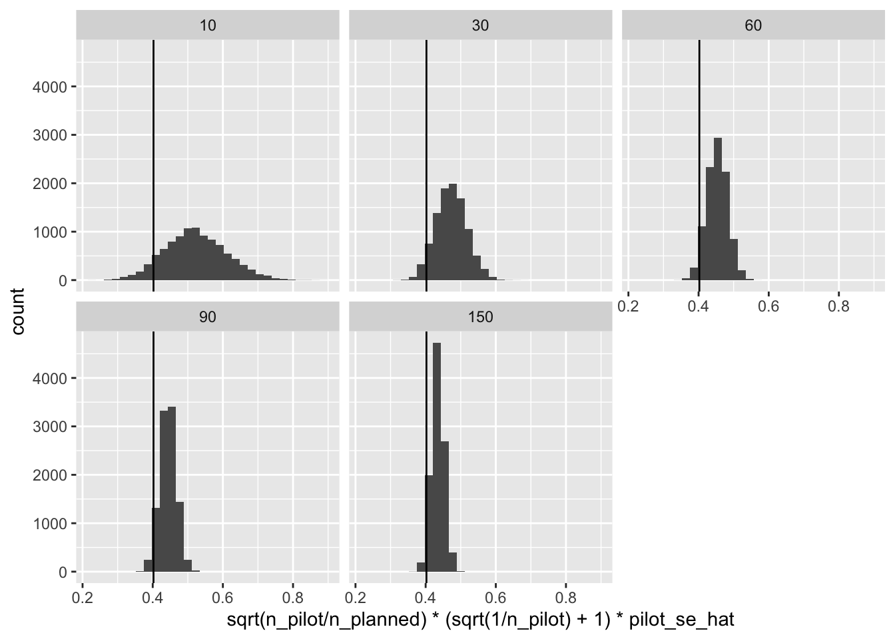

# set the treatment effect, SE, and sample size
tau <- 1 # treatment effect
se <- tau/(qnorm(0.95) + qnorm(0.80)) # standard error for 80% power
n_planned <- 500 # sample size per condition in planned full study
# calculate required standard deviation to yield 80% power
sigma <- se*sqrt(2*n_planned)/2Statistical Power from Pilot Data
statistical power
hypothesis tests
power analysis
methodology
In this post, I discuss how pilot data can be used to predict the standard error (but should not be used to estimate the treatment effect).
We can think of statistical power as determined by the ratio \(\frac{\tau}{SE}\), where \(\tau\) is the treatment effect and SE is the standard error of the estimate.1 To reason about statistical power, one needs to make assumptions or predictions about the treatment effect and the standard error.
1 Bloom (1995) has a really beautiful paper on this idea. It’s one of my favorites.
In this post, I discuss ways that pilot data should and should not be used as part of a power analysis. I make two points:
- Pilot data are not usually useful to estimate the treatment effect.
- Pilot data can be useful to predict the standard error.
With a predicted standard error in hand, we can obtain a prediction for the minimum detectable effect, the statistical power, or the required sample size.
Pilot data should not usually be used to estimate the treatment effect
To compute statistical power, researchers need to make an assumption about the size of the treatment effect. It’s easy to feel lost without any guidance on what effects are reasonable to look for, so we might feel tempted to use a small pilot study to estimate the treatment effect and then use that estimate in our power analysis. This is a bad idea because the estimate of the treatment effect from a pilot study is too uncertain for a power analysis.2 Leon, Davis, and Kraemer (2011) and Albers and Lakens (2018) discuss this problem in more detail.3
2 The estimate of the treatment effect from a well-powered study is too noisy as well.
3 Perugini, Gallucci, and Costantini (2014) offer a potential solution if it’s important to estimate the treatment effect from pilot data, though their approach is data-hungry and very conservative.
Warning
Do not use a small pilot study to estimate the treatment effect and then use that estimate in a power analysis.
Pilot data can be used to predict the standard error
While pilot data might not be useful for estimating the treatment effect, pilot data are useful for estimating the standard error of the planned study. Given that power is a function of the ratio of the treatment effect and the standard error, it’s important to have a good prediction of the standard error. Further, the noisiness of this estimated standard error is predictable, so it’s easy to nudge the estimate slightly to obtain a conservative prediction.
In political science, it’s common to run pilot studies with, say, 100-200 respondents before a full-sized study of, say, 1,000 respondents. It can be very helpful to use these pilot data to confirm any preliminary power calculations.
Here are two helpful rules:
- We can use pilot data to predict the standard error of the estimated treatment effect in a planned study. Conservatively, the standard error will be about \(\sqrt{\frac{n^{pilot}}{n^{planned}}}\ \left\lbrack \left( \sqrt{\frac{1}{n^{pilot}}} + 1 \right) \cdot {\widehat{SE}}_{\widehat{\tau}}^{pilot} \right\rbrack\), where \(n^{pilot}\) is the number of respondents per condition in the pilot data, \(SE_{\widehat{\tau}}^{pilot}\) is the estimated standard error using the pilot data, and \(n^{planned}\) is the number of respondents per condition in the planned study.
- We can use pilot data to conservatively predict the sample size we will need in a planned study. For 80% power to detect the treatment effect \(\widetilde{\tau}\), we will (conservatively) need about \(n^{pilot} \cdot \left\lbrack \frac{2.5}{\widetilde{\tau}} \cdot \left( \sqrt{\frac{1}{n^{pilot}}} + 1 \right) \cdot {\widehat{SE}}_{\widehat{\tau}}^{pilot} \right\rbrack^{2}\) respondents per condition, where \(n^{pilot}\) is the number of respondents per condition in the pilot data and \(SE_{\widehat{\tau}}^{pilot}\) is the estimated standard error using the pilot data.
Note that the factor \(\sqrt{\frac{1}{n^{pilot}}}\) nudges the predicted standard error in a conservative direction. See this working paper for more details.
We can use the predicted standard error to find the minimum detectable effect (for 80% power) or the power (for a given treatment effect). Or we can use the pilot data to estimate the required sample size (for 80% power to detect a given treatment effect.)
An illustrative simulation
Here’s a simulation to illustrate the idea.
The setting
Let’s imagine a setting where a study with 1,000 respondents has 80% power to detect an average treatment effect of 1 unit. I’m imagining that we’re using linear regression with robust standard errors to test the hypothesis that the average treatment effect is positive (aka Welch’s t-test). There’s just one treatment group and one control group with 500 respondents each, for 1,000 respondents total.
Let’s confirm that this setting does indeed give us 80% power.
res_list <- NULL # a container to collect results
for (i in 1:1000) {
# simulate study
y0 <- rnorm(2*n_planned, sd = sigma)
y1 <- y0 + tau
d <- sample(rep(0:1, length.out = 2*n_planned))
y <- ifelse(d == 1, y1, y0)
data <- data.frame(y, d)
# fit model and get standard error and p-value
fit <- lm(y ~ d, data = data)
tau_hat <- as.numeric(coef(fit)["d"])
se_hat <- as.numeric(sqrt(diag(sandwich::vcovHC(fit, type = "HC2")))["d"])
p_value <- pnorm(tau_hat/se_hat, lower.tail = FALSE)
# collect results
res_list[[i]] <- data.frame(tau_hat, se_hat, p_value)
}
# compute power (and monte carlo error)
res_list |>
bind_rows() |>
summarize(power = mean(p_value < 0.05),
mc_error = sqrt(power*(1 - power))/sqrt(n()),
lwr = power - 2*mc_error,
upr = power + 2*mc_error) power mc_error lwr upr
1 0.8 0.01264911 0.7747018 0.8252982Nailed it!
The Pilot Studies
Now let’s simulate a 1,000 pilot studies with 10, 30, 60, 90, and 150 respondents per condition. I’m going to grab the standard error from each but throw the estimates of the treatment effects right into the trash.
# sample size per condition in pilot study
n_pilot_values <- c(10, 30, 60, 90, 150)
res_list <- NULL # a container to collect results
iter <- 1 # counter to index the collection
for (i in 1:1000) {
for (j in 1:length(n_pilot_values)) {
# set respondents per condition in the pilot study
n_pilot <- n_pilot_values[j]
# simulate pilot study
y0 <- rnorm(2*n_pilot, sd = sigma)
y1 <- y0 + tau
d <- sample(rep(0:1, length.out = 2*n_pilot))
y <- ifelse(d == 1, y1, y0)
pilot_data <- data.frame(y, d)
# fit model and get standard error
fit_pilot <- lm(y ~ d, data = pilot_data)
tau_hat <- as.numeric(coef(fit_pilot)["d"])
pilot_se_hat <- as.numeric(sqrt(diag(sandwich::vcovHC(fit_pilot, type = "HC2")))["d"])
# collect standard errors
res_list[[iter]] <- data.frame(pilot_se_hat, n_pilot)
iter <- iter + 1 # update counter
}
}
# combine collected results in a data frame
res <- bind_rows(res_list) |>
glimpse()Rows: 5,000
Columns: 2
$ pilot_se_hat <dbl> 2.4498312, 1.5249611, 1.2713570, 0.9729555, 0.6930375, 2.…
$ n_pilot <dbl> 10, 30, 60, 90, 150, 10, 30, 60, 90, 150, 10, 30, 60, 90,…Now let’s take a look a these standard errors from the simulated pilot studies. Notice that the standard errors are all larger than the standard error in the full study. And the smaller the pilot, the larger the standard error. This makes sense.
ggplot(res, aes(x = pilot_se_hat)) +
geom_histogram() +
facet_wrap(vars(n_pilot)) +
geom_vline(xintercept = se)
However, we can translate the standard error from the pilot studies into predictions for the standard errors in the full studies by multiplying the pilot standard error times \(\sqrt{\frac{n^{pilot}}{n^{planned}}}\).4
4 In this setting, we’re planning on 500 respondents per conditions.
ggplot(res, aes(x = sqrt(n_pilot/n_planned)*pilot_se_hat)) +
geom_histogram() +
facet_wrap(vars(n_pilot)) +
geom_vline(xintercept = se)
That’s spot on! However, notice that we sometimes substantially underestimate the standard error. When we underestimate the standard error, we will underestimate the power.
As a solution, we can gently nudge the pilot standard error up by a factor of \(\left( \sqrt{\frac{1}{n^{pilot}}} + 1 \right)\), which will make “almost all” of the standard errors over-estimates or “conservative” (details here).
ggplot(res, aes(x = sqrt(n_pilot/n_planned)*(sqrt(1/n_pilot) + 1)*pilot_se_hat)) +
geom_histogram() +
facet_wrap(vars(n_pilot)) +
geom_vline(xintercept = se)
This works super well.
But how should we use this predicted standard error to evaluate or choose a sample size?
How to use the predicted standard error
We can use these conservative standard errors to compute any of the following (conservatively, as well):
- the minimum detectable effect with 80% power
- the statistical power for a given treatment effect
- the sample size required to obtain 80% power for a given treatment effect
The Minimum Detectable Effect
First, we can compute the minimum detectable effect with 80% power. This is about 2.5 times the standard error.
# compute minimum detectable effect
mde <- res %>%
mutate(pred_se_cons = sqrt(n_pilot/n_planned)*(sqrt(1/n_pilot) + 1)*pilot_se_hat,
mde_cons = 2.5*pred_se_cons) %>%
glimpse()Rows: 5,000
Columns: 4
$ pilot_se_hat <dbl> 2.4498312, 1.5249611, 1.2713570, 0.9729555, 0.6930375, 2.…
$ n_pilot <dbl> 10, 30, 60, 90, 150, 10, 30, 60, 90, 150, 10, 30, 60, 90,…
$ pred_se_cons <dbl> 0.4560182, 0.4417360, 0.4972678, 0.4563020, 0.4105858, 0.…
$ mde_cons <dbl> 1.140046, 1.104340, 1.243169, 1.140755, 1.026465, 1.34938…# plot minimum detectable effect
ggplot(mde, aes(x = mde_cons)) +
geom_histogram() +
facet_wrap(vars(n_pilot)) +
geom_vline(xintercept = tau)Statistical Power
Second, we can compute the statistical power for given treatment effect. Power equals \(1 - \Phi_{std}\left(1.64 - \frac{\tau}{SE} \right)\), where \(\Phi_{std}(z)\) is pnorm(), \(SE\) is the standard error of the estimated treatment effect, and \(\tau\) is the treatment effect.
# compute the power
pwr <- res %>%
mutate(pred_se_cons = sqrt(n_pilot/n_planned)*(sqrt(1/n_pilot) + 1)*pilot_se_hat,
power_cons = 1 - pnorm(1.64 - tau/pred_se_cons)) %>%
glimpse()Rows: 5,000
Columns: 4
$ pilot_se_hat <dbl> 2.4498312, 1.5249611, 1.2713570, 0.9729555, 0.6930375, 2.…
$ n_pilot <dbl> 10, 30, 60, 90, 150, 10, 30, 60, 90, 150, 10, 30, 60, 90,…
$ pred_se_cons <dbl> 0.4560182, 0.4417360, 0.4972678, 0.4563020, 0.4105858, 0.…
$ power_cons <dbl> 0.7098323, 0.7336191, 0.6446771, 0.7093652, 0.7868515, 0.…# plot the power
ggplot(pwr, aes(x = power_cons)) +
geom_histogram() +
facet_wrap(vars(n_pilot)) +
geom_vline(xintercept = .8)
Required Sample Size
Finally, we can compute the required sample size to obtain 80% power to detect a certain treatment effect.
As I described above, for 80% power to detect the treatment effect \(\widetilde{\tau}\), we will (conservatively) need about \(n^{pilot} \cdot \left\lbrack \frac{2.5}{\widetilde{\tau}} \cdot \left( \sqrt{\frac{1}{n^{pilot}}} + 1 \right) \cdot {\widehat{SE}}_{\widehat{\tau}}^{pilot} \right\rbrack^{2}\) respondents per condition, where \(n^{pilot}\) is the number of respondents per condition in the pilot data and \(SE_{\widehat{\tau}}^{pilot}\) is the estimated standard error using the pilot data.
# compute the required sample size
ss <- res %>%
mutate(ss_cons = n_pilot*((2.5/tau)*(sqrt(1/n_pilot) + 1)*pilot_se_hat)^2) %>%
glimpse()Rows: 5,000
Columns: 3
$ pilot_se_hat <dbl> 2.4498312, 1.5249611, 1.2713570, 0.9729555, 0.6930375, 2.…
$ n_pilot <dbl> 10, 30, 60, 90, 150, 10, 30, 60, 90, 150, 10, 30, 60, 90,…
$ ss_cons <dbl> 649.8520, 609.7834, 772.7352, 650.6609, 526.8148, 910.418…# plot the required sample size
ggplot(ss, aes(x = ss_cons)) +
geom_histogram() +
facet_wrap(vars(n_pilot)) +
geom_vline(xintercept = n_planned)
Sample size is an especially helpful metric, because it is the constraint and cost that researchers face most directly. Because these required sample sizes are conservative, they tend to be too large—but by how much? For pilots with 60 respondents per condition, the sample sizes tend to be about 30% too large. This means that researchers could have obtained 80% power with 1,000 respondents but instead used 1,300 respondents.
In my view, this 30% waste is not particularly concerning. It’s relatively small and the statistical power will still be less than 90% even if the sample size is increased by 30%.
But most importantly, almost all of the sample sizes exceed what we need for 80% power.
# compute features of the sample sizes
ss %>%
group_by(n_pilot) %>%
mutate(waste = ss_cons/n_planned - 1) %>%
summarize(avg_waste = scales::percent(mean(waste), accuracy = 1),
pct_too_small = scales::percent(mean(ss_cons < 500), accuracy = 1)) %>%
rename(`Respondents per condition in pilot study` = n_pilot,
`Average waste (needed 1,000 and used 1,300 means waste is 30%)` = avg_waste,
`Percent of sample sizes that produce less than 80% power` = pct_too_small) %>%
tinytable::tt()| Respondents per condition in pilot study | Average waste (needed 1,000 and used 1,300 means waste is 30%) | Percent of sample sizes that produce less than 80% power |
|---|---|---|
| 10 | 76% | 8% |
| 30 | 42% | 4% |
| 60 | 29% | 3% |
| 90 | 23% | 3% |
| 150 | 19% | 1% |
Summary
We think of statistical power as determined by the ratio \(\frac{\tau}{SE}\), where \(\tau\) is the treatment effect and SE is the standard error of the estimate. To reason about statistical power, one needs to make assumptions or predictions about the treatment effect and the standard error.
I make two points in this post:
- Pilot data are not usually useful to estimate the treatment effect.
- Pilot data can be useful to predict the standard error.
With a predicted standard error in hand, we can obtain a prediction for the minimum detectable effect, the statistical power, or the required sample size.
You can find more details in this paper.
References
Albers, Casper, and Daniël Lakens. 2018. “When Power Analyses Based on Pilot Data Are Biased: Inaccurate Effect Size Estimators and Follow-up Bias.” Journal of Experimental Social Psychology 74 (January): 187–95. https://doi.org/10.1016/j.jesp.2017.09.004.
Bloom, Howard S. 1995. “Minimum Detectable Effects.” Evaluation Review 19 (5): 547–56. https://doi.org/10.1177/0193841x9501900504.
Leon, Andrew C., Lori L. Davis, and Helena C. Kraemer. 2011. “The Role and Interpretation of Pilot Studies in Clinical Research.” Journal of Psychiatric Research 45 (5): 626–29. https://doi.org/10.1016/j.jpsychires.2010.10.008.
Perugini, Marco, Marcello Gallucci, and Giulio Costantini. 2014. “Safeguard Power as a Protection Against Imprecise Power Estimates.” Perspectives on Psychological Science 9 (3): 319–32. https://doi.org/10.1177/1745691614528519.